Recently, I had a vintage granny square crochet cardigan that was my great-grandmother's (Grandma Lula) that I modified into a crop top. My goal was to use this garment that was special to me, but modify it into something I felt I would wear more often.
And although I have crocheted before, I wanted to make sure this project turned out as I was imagining it. I worked with a talented artist, Ashlee Elle, who is much more skilled at crochet than I am.
She was kind enough to share a tutorial on how she modified this crochet cardigan.
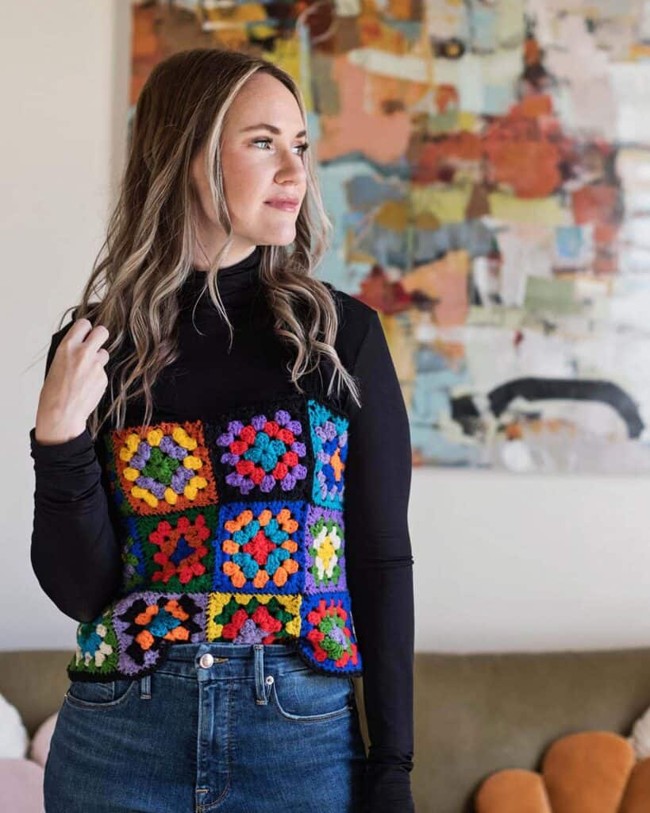I'm Ashlee Elle, crocheter, maker, & owner of The Dream Crochet Shoppe. I love constructing new designs— especially reusing yarn, as well as past projects that I have created.
So when Emma wanted me to create a crochet top from a handmade cardigan she owned, I decided to create two different projects (the crochet top and the crochet hat) while maintaining the similar form of the original item.
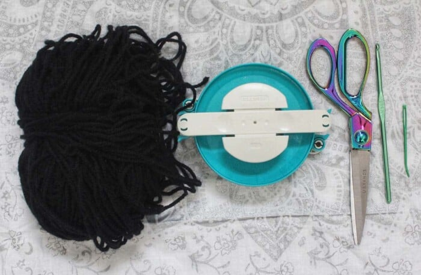Supplies
- 4.5mm crochet hook
- craft scissors or seam ripper
- yarn needle
- half a skein of black yarn (medium 4)
- Laying the cardigan flat, I cut the seams (using craft scissors) around the arm holes, wanting to primarily use the squares for both sides of the sleeves.
- Then, cutting down vertically for one set of squares which would open the sleeves up, for two sets of one large connected squares.
- With the yarn needle and a strand of yarn, sew the two squares together at the edges to create a full circle. 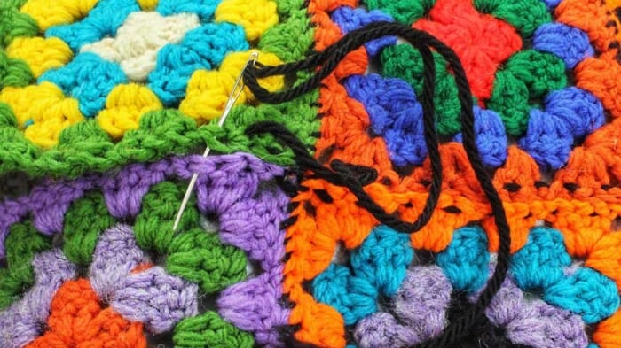
- Then, with my 4.5mm crochet hook and medium 4 black yarn, I inserted the hook into the side of the top and single crocheted for one round and fasten off and weaving in the ends for the finishing took to the top.
- Creating the straps for the crochet top, I inserted my hook into the top round of the front of crochet top above the squares.
Detaching both sides of the sleeves, also, wanting to maintain the wearability of the cardigan after the project.
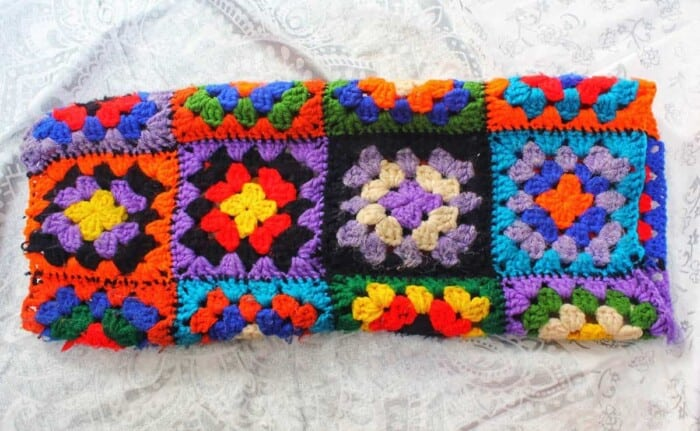Also, I took off the bottom row of squares (an extra additional row of squares to later use) so that the final construction would fit more of a crop top style.
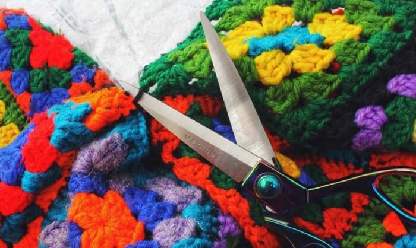 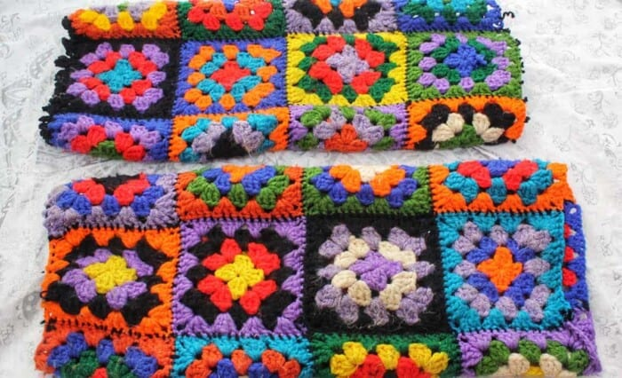 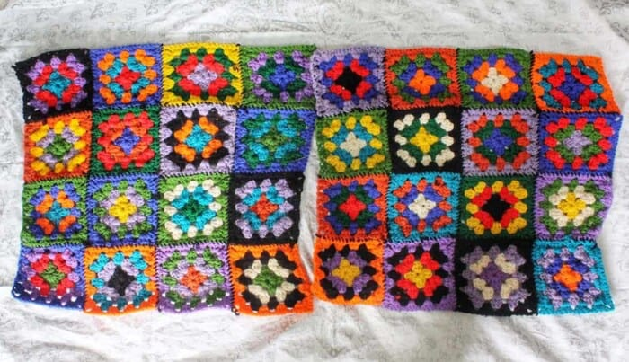I repeated the same method to offer the top a concise look by single crochet at the bottom of the top, as well.
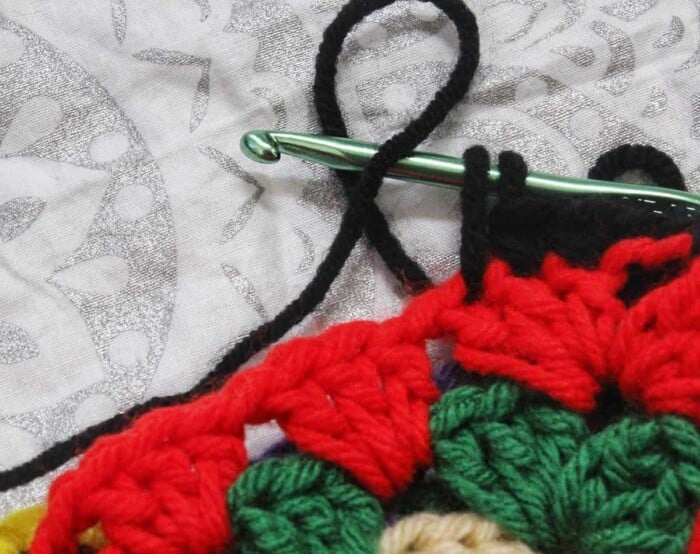Chaining for 30 STS, to connect to the back of the top. At the same top round, SL ST to connect, then turning my work, to half double crochet, back towards to front of the top to fully construct the straps.
SL ST to connect, fastening off and weaving in the ends. Skipping 22 STS, I rejoined the crochet hook to repeat the same method to construct two straps for the handmade top.
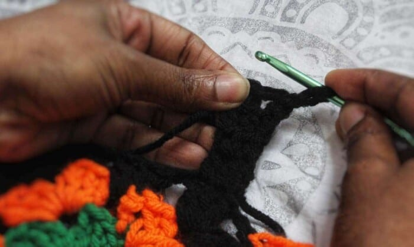 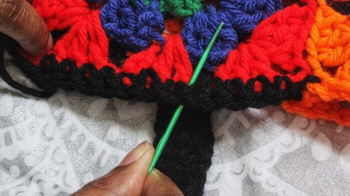 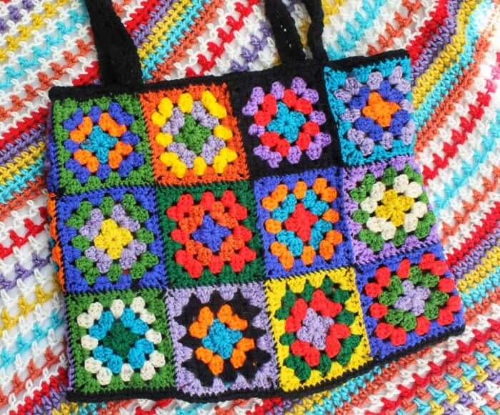Thank you Ashlee Elle! I'm wearing the crochet top with a turtleneck underneath in this photo because it's currently winter, but I plan to wear the top all on its own this summer.


Comments (72)
Jessica Wells | October 12, 2023
Love it! I've been trying out a few of your tips, and your guide made it so much easier.
Ryan Luvert | September 8, 2024
Your blog is amazing. Love to see more!
Alexander Brett | September 21, 2023
Great content! Would love to see more Guides.
Leave a Comment